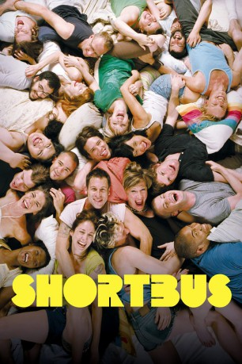

#10596 Shortbus
 gesehen am 29.01.2019
gesehen am 29.01.2019
 
 IMDB-Wertung: 6.5 / 10
IMDB-Wertung: 6.5 / 10  Tomatometer: 68
Tomatometer: 68  Metascore: 64
Metascore: 64 
New York. Jamie und James sind ein schwules Paar, in dessen Beziehung es kriselt; Sofia ist eine Paartherapeutin, die trotz akrobatischem Sex mit ihrem Mann Rob noch nie einen Orgasmus hatte; die junge Domina Severin leidet unter ihrer Unfähigkeit, eine tiefergehende persönliche Beziehung aufzubauen. Sie alle begegnen einander irgendwann, kommen einander näher: Zunächst die beiden Schwulen und die Therapeutin in einer grotesk endenden Therapiesitzung, zuletzt alle in einem Club namens Shortbus in Brooklyn. Dieser Treffpunkt, eine Kombination von Varieté und Swinger-Club für fröhlichen Gruppensex, erhebt den Anspruch, den ungebrochen liberalen, ja libertär-anarchistischen Zeitgeist in New York nach den Anschlägen des 11. September zu spiegeln. So fliegt die Kamera gleich zu Beginn des Films, ausgehend von den Füßen der Freiheitsstatue, über ein stilisiert animiertes Panorama der Stadt, hinein in die Wohnungen der gerade sexuell aktiven Protagonisten.
Jahr: 2006
Dauer: 101 Minuten
FSK: 18
Land: USA Studio: THINKFilmTonspuren: DTS - ,
Untertitel:
Auflösung: 1080p (1920x1080) Größe: 8714 MB
Genre: Drama, Liebe
Regisseur: John Cameron Mitchell
Drehbuch: John Cameron Mitchell
Soundtrack: Yo La Tengo
Darsteller:
- Paul Dawson als James
- Lindsay Beamish als Severin
- Sook-Yin Lee als Sofia
- Raphael Barker als Rob
- Peter Stickles als Caleb, the Stalker
 David Pittu als Jacuzzi Hunter
David Pittu als Jacuzzi Hunter- Jeff Whitty als Jacuzzi Hunted
- Mickey Cottrell als Dead Man in the Jacuzzi
- Mary Beth Peil als Ann (Our Lady of the Gutter)
- Mx Justin Vivian Bond als Justin Bond
- Murray Hill als Murray Hill
- Jonathan Caouette als Blondie-Grabber
- Jay Brannan als Ceth
- Rachael C. Smith als Zoey
 Yolonda Ross als Faustus
Yolonda Ross als Faustus- Daniela Sea als Little Prince
- Dirty Martini als Dirty Martini
 Miriam Shor als Cheryl
Miriam Shor als Cheryl- Justin Hagan als Brad
- Erin Markey als Sextra
- Jen Emma Hertel als Hungry March Band
- Marc Bonan als House Band Guest (uncredited)
- John Cameron Mitchell als Sextra (uncredited)
- Adam Hardman als Jesse, the John
- PJ DeBoy als Jamie
- Shanti Carson als Leah, the Beautiful Couple
- Jan Hilmer als Nick, the Beautiful Couple
- Bradford Scobie als Dr. Donut
- Ethan Eunson-Conn als Sex-Not-Bombs Room D.J.
- Stephen Kent Jusick als Creamy
- Derek Jackson als Derek
- Rachel Friedman als Yenta Voice
- Paul Oakley Stovall als Magnus
- Reg Vermue als The Albino
- Ray Rivas als Shabbos Goy
- Alan Mandell als Tobias, the Mayor
- Bitch als Bitch / Shortbus House Band
- Lex Vaughn als Bucky
- Jocelyn Samson als Jid
- Tanya Gagné als The Wau Wau Sisters
- Adrienne Truscott als The Wau Wau Sisters
- Timmy Young als Mikey / Oglesby the Puppet
- The World Famous *BoB als The World Famous *BOB*
- Eric Gilliland als Eric Gilliland
- Jasper James als Jasper
- Grace Kahng als Suicide Nurse
- Harry Slattery als Piñata Boy
- Ralph Gunderman als Radio Announcer
- Nate Calkins als Shortbus House Band
- Christine Choi als Shortbus House Band
Datei: X:\FSK18-2000-2009\Shortbus (2006, FSK18, 1920x1080).mkv seit 29.01.2019
Festplatte: FSK18
 Es gibt insgesamt 106 Filme in der Gruppe 'FSK18-2000-2009'
Es gibt insgesamt 106 Filme in der Gruppe 'FSK18-2000-2009'